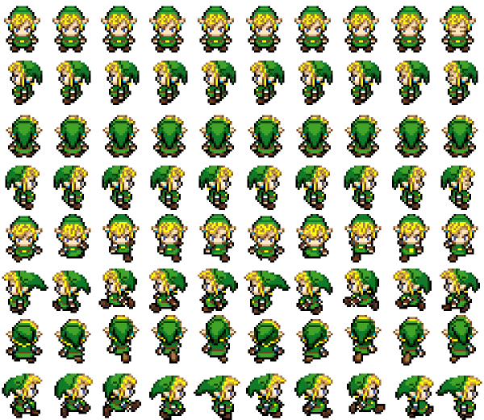
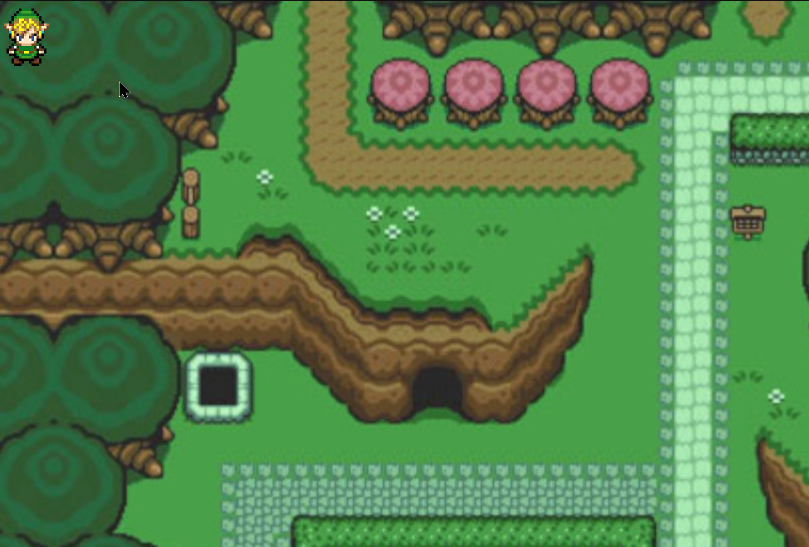

Dans cette première étape, vous allez déjà commencer par créer vos fichiers et les relier à votre document html.
Il faudra également créer quelques règles CSS de base.
Il vous faut quatre fichiers :
Créez vos fichiers dans le dossier assets, et liez-les au document zelda.html. Il faut les lier dans l'ordre suivant : map.js, link.js puis game.js.
En étudiant le html du fichier zelda.html, vous remarquerez que celui-ci ne contient que deux divs :
Ces deux divs vont représenter respectivement la carte (le background) du jeu et le personnage principale Link. Il n'y aura besoin de rien d'autre.
Il faut maintenant écrire les règles CSS de ces deux divs.
Pour cette div, c'est assez simple, vous voulez qu'elle recouvre tout l'écran (largeur et hauteur à 100% ?) et qu'elle utilise l'image bg.png comme image de fond.
Il y a quelques petites subtilités quand même.
Tout d'abord, pour des raisons d'optimisation, les dimensions de l'image ont été divisées par 2 par rapport à ce qu'elles devraient réellement faire. Si vous regardez les propriétés de l'image, vous verrez que celle-ci fait 1920px de largeur. Or, elle devrait en faire 3840.
Pour régler cela, utilisez la propriété css background-size pour forcer la largeur à 3840 pixels.
Deuxièmement, le body d'une page HTML ayant toujours une marge interne, ce dont nous ne voulons pas ici. Pensez bien à écrire une règle CSS qui fasse un reset de toutes les marges de votre document. De plus il faudra également forcer la hauteur de votre html et de votre body, sans quoi, sans contenu, leur hauteur sera de 0 pixels.
Vous devez donc créez deux règles juste pour le background :
#map, qui dit :
background-size est de 3840 pixels.Avant de commencer le CSS de link, regardez l'image link.png qui le représente. Vous constaterez que c'est en fait un ensemble de petites images assemblées en lignes et colonnes. On appelle ceci une spritesheet, une feuille de sprites.
Elle regroupe absolument toutes les représentations de notre personnage.
Ici, notre personnage ne peut que se déplacer, le nombre d'images est donc limité, mais dans un jeu plus complexe, il existerait des dizaines, voire des centaines d'images du personnage pour toutes les étapes, de toutes les actions qu'il peut réaliser et sous tous les angles de caméra possible.
Dans notre cas, notre personnage ne peut faire que deux choses :
Mais, il peut faire ces deux choses dans les quatres directions : haut, bas, gauche et doite. Ce qui nous fait déjà 8 actions distinctes.
De plus, une seule de ses actions (par exemple se déplacer vers la droite), est en fait la somme de plusieurs images qui se succèdent.
Notre spritesheet est donc organisée en lignes et colonnes comme suit :
Vous avez peut-être déjà remarqué que si les images changent tout le temps lorsque le personnage marche, elles changent très peu, voire pas du tout, lorsqu'il est immobile.
En effet, lorsqu'il est à l'arrêt, notre personnage, ne fait rien, ou presque. Il se contente juste de cligner des yeux de temps en temps, ce qui est représenté - lorsque ses yeux sont visibles - sur les deux dernières images. Par conséquent, lorsque le personnage est immobile, notre moteur de jeu, se contentera d'afficher presque toujours les mêmes images, alors que lorsqu'il marche, ces images changeront à intervalle régulier pour donner l'illusion du mouvement (notez que l'on a utilisé le terme d'intervale ici, c'est un indice important non ?).
Donc puisque notre personnage est en fait la somme de plusieurs petites images affichées les unes après les autres mais que jamais deux images ne sont affiché en même temps, il est facile de déterminer la taille de la div du personnage, c'est en fait la taille d'une seule de ces petites images.
La spritesheet totale fait 600 pixels par 520 pixels. Et nous avons 8 lignes par 10 colonnes.
Une seule image fait donc :
Vous pouvez donc désormais écrire votre règle CSS pour la div #link qui dit que
Si tout se passe bien, voici ce que vous devriez obtenir :
